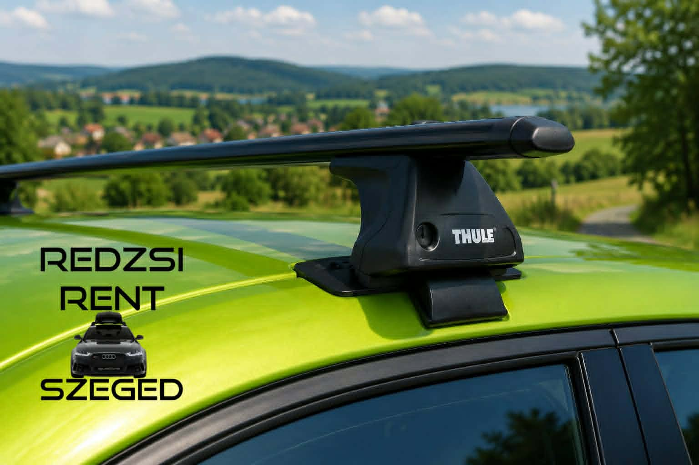
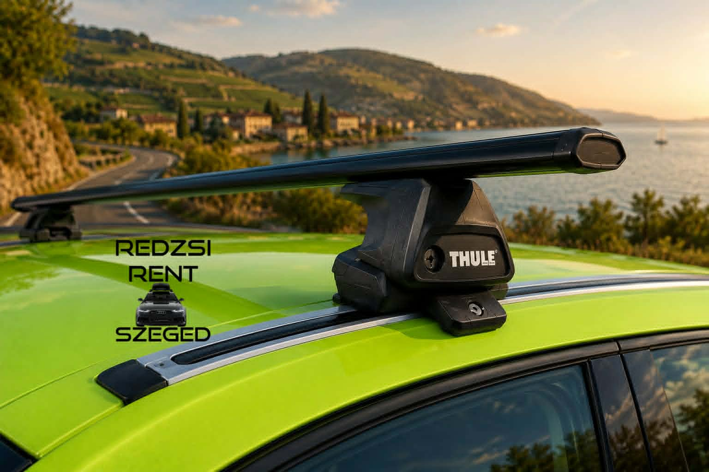

Tetőcsomagtartó bérlés Szegeden
Tetőbox bérléshez megfelelő tetőcsomagtartóra is szükség van. Amennyiben Önnek nincs saját felszerelése, segítünk a megfelelő Thule rendszer kiválasztásában az autó típusa alapján.
Miből áll egy Thule tetőcsomagtartó rendszer?
A Thule tetőcsomagtartó rendszer több, egymáshoz illeszkedő elemből áll. A pontos összeállítás mindig az adott autó típusától, évjáratától és tetőkialakításától függ.
Thule talp
A talp biztosítja a kapcsolatot az autó tetőszerkezete és a keresztrúd között. Ebből más típus szükséges például normál tetőhöz, tetősínhez vagy tetőkorláthoz.
Keresztrúd
A két keresztrúd kerül az autó tetejére. Erre rögzíthető a tetőbox, ezért fontos a megfelelő méret és teherbírás.
Rögzítő készlet
Az autóspecifikus rögzítő készlet gondoskodik arról, hogy a rendszer pontosan illeszkedjen az adott járműhöz.
Mi szükséges a pontos kiválasztáshoz?
Autó típusa
A pontos márka, modell és évjárat alapján tudjuk ellenőrizni, melyik Thule rendszer kompatibilis az autóval.
Tetőkialakítás
Fontos, hogy az autón normál tető, fixpont, integrált tetősín, nyitott tetőkorlát vagy más rögzítési megoldás található.
Kompatibilitás
A megfelelő talp, keresztrúd és rögzítő készlet együtt biztosítja a stabil és biztonságos felszerelést.
Gyakori autótető típusok

Normál tető
Gyári sín vagy korlát nélküli tető. Ebben az esetben a tetőcsomagtartó jellemzően az ajtókeretnél rögzül.

Fixpontos tető
Az autó tetején gyárilag kialakított rögzítési pontok találhatók, amelyekhez típusazonos talp és készlet szükséges.

Integrált tetősín
A sín szorosan illeszkedik a tetőhöz, alatta nincs látható rés. Ehhez külön kompatibilis Thule talp szükséges.

Nyitott tetőkorlát
A hosszanti korlát kiemelkedik a tetőből, alatta látható rés van. A keresztrudak erre a korlátra rögzíthetők.

T-profilos sín
Speciális, süllyesztett sínrendszer. Ilyen kialakításnál külön kompatibilis rögzítési megoldásra van szükség.
A képeken szereplő tetőcsomagtartó illusztrációk mesterséges intelligencia segítségével készültek, a valóságban a rendszerek kinézete típustól és autótól függően eltérhetnek.
Rögzítési módok röviden
| Rögzítés típusa | Jellemző |
|---|---|
| Normál tető | Gyári sín vagy korlát nélküli autóknál alkalmazott megoldás. |
| Fixpontos tető | Az autó tetején gyárilag kialakított rögzítési pontokhoz illeszkedik. |
| Integrált tetősín | A sín közvetlenül a tetőn fut, nincs alatta nyitott rés. |
| Nyitott tetőkorlát | A korlát kiemelkedik a tetőből, a rögzítés erre kapaszkodik rá. |
| T-profilos sín | Speciális sínrendszer, amelyhez külön kompatibilis rögzítés szükséges. |
Ár
- Tetőcsomagtartó bérlés: minimum 5 napra 20 000 Ft.
- 5 nap után: 1 000 Ft / nap.
- Fontos: a pontos kompatibilitást minden esetben az autó típusa alapján ellenőrizzük.
Kérdése van?
Amennyiben nem biztos benne, milyen tetőcsomagtartó illik az autójára, vagy segítségre van szüksége a tetőbox bérléshez, keressen minket bizalommal.
Kapcsolat ➜